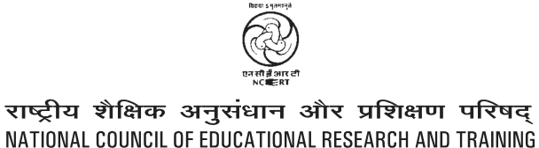

MATHEMATICS
Textbook for Class X

\(1062 - M\)
Textbook for Class X
First Edition
December 2006 Pausa 1928 q No part of this publication may be reproduced, stored in a retrieval system or transmitted, in any form or by any means, electronic, mechanical, photocopying,
Reprinted recording or otherwise without the prior permission of the publisher. October 2007, January 2009, q This book is sold subject to the condition that it shall not, by way of trade, be lent, re-sold, hired out or otherwise disposed of without the publisher’s
December 2009, November 2010,
consent, in any form of binding or cover other than that in which it is published. January 2012, November 2012, q The correct price of this publication is the price printed on this page, Any November 2013, November 2014, revised price indicated by a rubber stamp or by a sticker or by any other means December 2015, December 2016, is incorrect and should be unacceptable.
December 2017, January 2019,
August 2019, January 2021 and November 2021 NCERT Campus
Revised Edition
October 2022, Ashwina 1944 Hosdakere Halli Extension
Reprinted Banashankari III Stage March 2024 Chaitra 1946 Bengaluru 560 085 Phone : 080-26725740
June 2024 Jyeshtha 1946 Navjivan Trust Building December 2024 Agrahayana 1946 P.O.Navjivan
PD 225T GS
©National Council of Educational Kolkata 700 114 Phone : 033-25530454
Research and Training, 2006,2022 CWC Complex
` 125.00 Head, Publication : M.V. Srinivasan
Printed on 80 GSM paper with NCERT Chief Business : Amitabh Kumar watermark Manager
Published at the Publication Division by Production Officer : Sunil Sharma the Secretary, National Council of Educational Research and Training, Illustrations Sri Aurobindo Marg, New Delhi 110 016 Joel Gill and Arvinder Chawla and printed at Raj Printers, A-9, Sector B-2, Tronica City, Loni, Ghaziabad Cover (U.P.) 201102 Arvinder Chawla
Foreword
The National Curriculum Framework 2005, recommends that children’s life at school must be linked to their life outside the school. This principle marks a departure from the legacy of bookish learning which continues to shape our system and causes a gap between the school, home and community. The syllabi and textbooks developed on the basis of NCF signify an attempt to implement this basic idea. They also attempt to discourage rote learning and the maintenance of sharp boundaries between different subject areas. We hope these measures will take us significantly further in the direction of a child-centred system of education outlined in the National Policy on Education (1986). The success of this effort depends on the steps that school principals and teachers will take to encourage children to reflect on their own learning and to pursue imaginative activities and questions. We must recognise that, given space, time and freedom, children generate new knowledge by engaging with the information passed on to them by adults. Treating the prescribed textbook as the sole basis of examination is one of the key reasons why other resources and sites of learning are ignored. Inculcating creativity and initiative is possible if we perceive and treat children as participants in learning, not as receivers of a fixed body of knowledge. These aims imply considerable change in school routines and mode of functioning. Flexibility in the daily time-table is as necessary as rigour in implementing the annual calendar so that the required number of teaching days are actually devoted to teaching. The methods used for teaching and evaluation will also determine how effective this textbook proves for making children’s life at school a happy experience, rather than a source of stress or boredom. Syllabus designers have tried to address the problem of curricular burden by restructuring and reorienting knowledge at different stages with greater consideration for child psychology and the time available for teaching. The textbook attempts to enhance this endeavour by giving higher priority and space to opportunities for contemplation and wondering, discussion in small groups, and activities requiring hands-on experience. The National Council of Educational Research and Training (NCERT) appreciates the hard work done by the textbook development committee responsible for this book. We wish to thank the Chairperson of the advisory group in Science and Mathematics, Professor J.V. Narlikar and the Chief Advisors for this book, Professor P. Sinclair of IGNOU, New Delhi and Professor G.P. Dikshit (Retd.) of Lucknow University, Lucknow for guiding the work of this committee. Several teachers
contributed to the development of this textbook; we are grateful to their principals for making this possible. We are indebted to the institutions and organisations which have generously permitted us to draw upon their resources, material and personnel. We are especially grateful to the members of the National Monitoring Committee, appointed by the Department of Secondary and Higher Education, Ministry of Human Resource Development under the Chairpersonship of Professor Mrinal Miri and Professor G.P. Deshpande, for their valuable time and contribution. As an organisation committed to systemic reform and continuous improvement in the quality of its products, NCERT welcomes comments and suggestions which will enable us to undertake further revision and refinement.
New Delhi National Council of Educational 15 November 2006 Research and Training
Rationalisation of Content in the Textbooks
In view of the COVID-19 pandemic, it is imperative to reduce content load on students. The National Education Policy 2020, also emphasises reducing the content load and providing opportunities for experiential learning with creative mindset. In this background, the NCERT has undertaken the exercise to rationalise the textbooks across all classes. Learning Outcomes already developed by the NCERT across classes have been taken into consideration in this exercise.
Contents of the textbooks have been rationalised in view of the following:
- •Overlapping with similar content included in other subject areas in the same
class
- •Similar content included in the lower or higher class in the same subject
- •Difficulty level
- •Content, which is easily accessible to students without much interventions from
teachers and can be learned by children through self-learning or peer-learning
- •Content, which is irrelevant in the present context
This present edition, is a reformatted version after carrying out the changes given above.
Preface
Through the years, from the time of the Kothari Commission, there have been several committees looking at ways of making the school curriculum meaningful and enjoyable for the learners. Based on the understanding developed over the years, a National Curriculum Framework (NCF) was finalised in 2005. As part of this exercise, a National Focus Group on Teaching of Mathematics was formed. Its report, which came in 2005, highlighted a constructivist approach to the teaching and learning of mathematics. The essence of this approach is that children already know, and do some mathematics very naturally in their surroundings, before they even join school. The syllabus, teaching approach, textbooks etc., should build on this knowledge in a way that allows children to enjoy mathematics, and to realise that mathematics is more about a way of reasoning than about mechanically applying formulae and algorithms. The students and teachers need to perceive mathematics as something natural and linked to the world around us. While teaching mathematics, the focus should be on helping children to develop the ability to particularise and generalise, to solve and pose meaningful problems, to look for patterns and relationships, and to apply the logical thinking behind mathematical proof. And, all this in an environment that the children relate to, without overloading them. This is the philosophy with which the mathematics syllabus from Class I to Class XII was developed, and which the textbook development committee has tried to realise in the present textbook. More specifically, while creating the textbook, the following broad guidelines have been kept in mind. l The matter needs to be linked to what the child has studied before, and to her experiences.
l The language used in the book, including that for ‘word problems’, must be clear, simple and unambiguous.
l Concepts/processes should be introduced through situations from the children’s environment.
l For each concept/process give several examples and exercises, but not of the same kind. This ensures that the children use the concept/process again and again, but in varying contexts. Here ‘several’ should be within reason, not overloading the child.
l Encourage the children to see, and come out with, diverse solutions to problems.
l As far as possible, give the children motivation for results used. l All proofs need to be given in a non-didactic manner, allowing the learner to see the flow of reason. The focus should be on proofs where a short and clear argument reinforces mathematical thinking and reasoning. l Whenever possible, more than one proof is to be given. l Proofs and solutions need to be used as vehicles for helping the learner develop a clear and logical way of expressing her arguments. l All geometric constructions should be accompanied by an analysis of the construction and a proof for the steps taken to do the required construction. Accordingly, the children would be trained to do the same while doing constructions.
l Add such small anecdotes, pictures, cartoons and historical remarks at several places which the children would find interesting. l Include optional exercises for the more interested learners. These would not be tested in the examinations.
l Give answers to all exercises, and solutions/hints for those that the children may require.
l Whenever possible, propagate constitutional values. As you will see while studying this textbook, these points have been kept in mind by the Textbook Development Committee. The book has particularly been created with the view to giving children space to explore mathematics and develop the abilities to reason mathematically. Further, two special appendices have been given - Proofs in Mathematics, and Mathematical Modelling. These are placed in the book for interested students to study, and are only optional reading at present. These topics may be considered for inclusion in the main syllabi in due course of time. As in the past, this textbook is also a team effort. However, what is unusual about the team this time is that teachers from different kinds of schools have been an integral part at each stage of the development. We are also assuming that teachers will contribute continuously to the process in the classroom by formulating examples and exercises contextually suited to the children in their particular classrooms. Finally, we hope that teachers and learners would send comments for improving the textbook to the NCERT.
Textbook Development Committee
CHAIRPERSON, ADVISORY GROUP IN SCIENCE AND MATHEMATICS
J.V. Narlikar, Emeritus Professor, Inter-University Centre for Astronomy & Astrophysics (IUCAA), Ganeshkhind, Pune University, Pune
CHIEF ADVISORS
P. Sinclair, Professor of Mathematics, IGNOU, New Delhi
G.P. Dikshit, Professor (Retd.), Lucknow University, Lucknow
CHIEF COORDINATOR
Hukum Singh, Professor and Head (Retd.), DESM, NCERT, New Delhi
MEMBERS
Anjali Lal, PGT, DAV Public School, Sector-14, Gurgaon
A.K. Wazalwar, Professor and Head, DESM, NCERT
B.S. Upadhyaya, Professor, RIE, Mysore
Jayanti Datta, PGT, Salwan Public School, Gurgaon
Mahendra Shanker, Lecturer (S.G.) (Retd.), NCERT
Manica Aggarwal, Green Park, New Delhi
N.D. Shukla, Professor (Retd.), Lucknow University, Lucknow
Ram Avtar, Professor (Retd.) & Consultant, DESM, NCERT
Rama Balaji, TGT, K.V., MEG & Centre, St. John’s Road, Bangalore S. Jagdeeshan, Teacher and Member, Governing Council, Centre for Learning, Bangalore S.K.S. Gautam, Professor (Retd.), DESM, NCERT
Vandita Kalra, Lecturer, Sarvodaya Kanya Vidyalaya, Vikaspuri District Centre, Delhi V.A. Sujatha, TGT, Kendriya Vidyalaya No. 1, Vasco, Goa
V. Madhavi, TGT, Sanskriti School, Chankyapuri, New Delhi
MEMBER-COORDINATOR
R.P. Maurya, Professor, DESM, NCERT, New Delhi
Acknowledgements
The Council gratefully acknowledges the valuable contributions of the following participants of the Textbook Review Workshop: Mala Mani, TGT, Amity International School, Sector-44, Noida; Meera Mahadevan, TGT, Atomic Energy Central School, No. 4, Anushakti Nagar, Mumbai; Rashmi Rana, TGT, D.A.V. Public School, Pushpanjali Enclave, Pitampura, Delhi; Mohammad Qasim, TGT, Anglo Arabic Senior Secondary School, Ajmeri Gate, Delhi; S.C. Rauto, TGT, Central School for Tibetans, Happy Valley, Mussoorie; Rakesh Kaushik, TGT, Sainik School, Kunjpura, Karnal; Ashok Kumar Gupta, TGT, Jawahar Navodaya Vidyalaya, Dudhnoi, Distt. Goalpara; Sankar Misra, TGT, Demonstration Multipurpose School, RIE, Bhubaneswar; Uaday Singh, Lecturer, Department of Mathematics, B.H.U., Varanasi; B.R. Handa, Emeritus Professor, IIT, New Delhi; Monika Singh, Lecturer, Sri Ram College (University of Delhi), Lajpat Nagar, New Delhi; G. Sri Hari Babu, TGT, Jawahar Navodaya Vidyalaya, Sirpur, Kagaz Nagar, Adilabad; Ajay Kumar Singh, TGT, Ramjas Sr. Secondary School No. 3, Chandni Chowk, Delhi; Mukesh Kumar Agrawal, TGT, S.S.A.P.G.B.S.S. School, Sector-V, Dr Ambedkar Nagar, New Delhi. Special thanks are due to Professor Hukum Singh, Head (Retd.), DESM, NCERT for his support during the development of this book. The Council acknowledges the efforts of Deepak Kapoor, Incharge, Computer Station; Purnendu Kumar Barik, Copy Editor; Naresh Kumar and Nargis Islam, D.T.P. Operators; Yogita Sharma, Proof Reader. The Contribution of APC-Office, administration of DESM, Publication Department and Secretariat of NCERT is also duly acknowledged.
Contents
Foreword iii Rationalisation of Contents in the Textbooks v Preface vii
- 1.Real Numbers 1
1.1 Introduction 1 1.2 The Fundamental Theorem of Arithmetic 2 1.3 Revisiting Irrational Numbers 6 1.4 Summary 9
- 2.Polynomials 10
2.1 Introduction 10 2.2 Geometrical Meaning of the Zeroes of a Polynomial 11 2.3 Relationship between Zeroes and Coefficients of a Polynomial 18 2.4 Summary 23
- 3.Pair of Linear Equations in Two Variables 24
3.1 Introduction 24 3.2 Graphical Method of Solution of a Pair of Linear Equations 25 3.3 Algebraic Methods of Solving a Pair of Linear Equations 30 3.3.1 Substitution Method 30 3.3.2 Elimination Method 34 3.4 Summary 37
- 4.Quadratic Equations 38
4.1 Introduction 38 4.2 Quadratic Equations 39 4.3 Solution of a Quadratic Equation by Factorisation 42 4.4 Nature of Roots 44 4.5 Summary 47
- 5.Arithmetic Progressions 49
5.1 Introduction 49
5.2 Arithmetic Progressions 51 5.3 nth Term of an AP 56 5.4 Sum of First n Terms of an AP 63 5.5 Summary 72
- 6.Triangles 73
6.1 Introduction 73 6.2 Similar Figures 74 6.3 Similarity of Triangles 79 6.4 Criteria for Similarity of Triangles 85 6.5 Summary 97
- 7.Coordinate Geometry 99
7.1 Introduction 99 7.2 Distance Formula 100 7.3 Section Formula 106 7.4 Summary 112
- 8.Introduction to Trigonometry 113
8.1 Introduction 113 8.2 Trigonometric Ratios 114 8.3 Trigonometric Ratios of Some Specific Angles 121 8.4 Trigonometric Identities 128 8.5 Summary 132
- 9.Some Applications of Trigonometry 133
9.1 Heights and Distances 133 9.2 Summary 143
- 10.Circles 144
10.1 Introduction 144 10.2 Tangent to a Circle 145 10.3 Number of Tangents from a Point on a Circle 147 10.4 Summary 153
- 11.Areas Related to Circles 154
11.1 Areas of Sector and Segment of a Circle 154 11.2 Summary 160
- 12.Surface Areas and Volumes 161
12.1 Introduction 161 12.2 Surface Area of a Combination of Solids 162 12.3 Volume of a Combination of Solids 167 12.4 Summary 170
- 13.Statistics 171
13.1 Introduction 171 13.2 Mean of Grouped Data 171 13.3 Mode of Grouped Data 183 13.4 Median of Grouped Data 188 13.5 Summary 200
- 14.Probability 202
14.1 Probability \(- A\) Theoretical Approach 202 14.2 Summary 217
Appendix A1 : Proofs in Mathematics 218
A1.1 Introduction 218 A1.2 Mathematical Statements Revisited 218 A1.3 Deductive Reasoning 221 A1.4 Conjectures, Theorems, Proofs and Mathematical Reasoning 223 A1.5 Negation of a Statement 228 A1.6 Converse of a Statement 231 A1.7 Proof by Contradiction 234 A1.8 Summary 238
Appendix A2 : Mathematical Modelling 239
A2.1 Introduction 239 A2.2 Stages in Mathematical Modelling 240 A2.3 Some Illustrations 244 A2.4 Why is Mathematical Modelling Important? 248 A2.5 Summary 249
Answers/Hints 250
Constitution of India
Part IV A (Article 51 A)
Fundamental Duties
It shall be the duty of every citizen of India -
- (a)to abide by the Constitution and respect its ideals and institutions, the
National Flag and the National Anthem;
- (b)to cherish and follow the noble ideals which inspired our national struggle
for freedom;
- (c)to uphold and protect the sovereignty, unity and integrity of India;
- (d)to defend the country and render national service when called upon to
do so;
- (e)to promote harmony and the spirit of common brotherhood amongst all
the people of India transcending religious, linguistic and regional or sectional diversities; to renounce practices derogatory to the dignity of women;
- (f)to value and preserve the rich heritage of our composite culture;
- (g)to protect and improve the natural environment including forests, lakes,
rivers, wildlife and to have compassion for living creatures;
- (h)to develop the scientific temper, humanism and the spirit of inquiry and
reform;
- (i)to safeguard public property and to abjure violence;
- (j)to strive towards excellence in all spheres of individual and collective
activity so that the nation constantly rises to higher levels of endeavour and achievement;
*(k) who is a parent or guardian, to provide opportunities for education to
his child or, as the case may be, ward between the age of six and fourteen years.
Note: The Article 51A containing Fundamental Duties was inserted by the Constitution
(42nd Amendment) Act, 1976 (with effect from 3 January 1977). *(k) was inserted by the Constitution (86th Amendment) Act, 2002 (with effect from 1 April 2010).